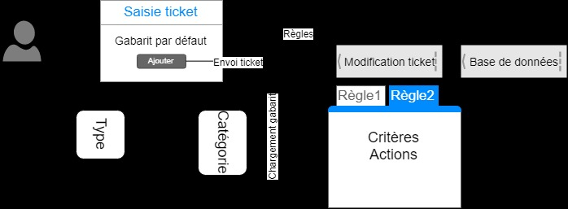

Module 04 — Assistance — Traitements automatisés des tickets¶
Séquence : Administration GLPI
Importance : socle de la progression officielle
Sources consolidées : 1 support(s) de cours, 1 énoncé(s), 1 correction(s)
Périmètre et versions
Le laboratoire cible GLPI 9.5, PHP 7.4 et FusionInventory. Pour GLPI 10 et 11, l’inventaire est natif et FusionInventory n’est plus pris en charge ; les déploiements actuels doivent suivre la documentation GLPI et utiliser GLPI Agent. Référence : Documentation GLPI, FAQ inventaire GLPI.
Objectifs et compétences¶
- Configurer catégories et gabarits de tickets.
- Créer des règles métiers avec critères et actions.
- Définir calendriers, SLM, SLA et escalades.
- Tester l’ordre de traitement sur des tickets représentatifs.
Façon simple de le comprendre
Ce module sert à passer de la notion « Assistance — Traitements automatisés des tickets » à une méthode que l’on peut expliquer, appliquer, vérifier et dépanner.
Méthode de travail¶
- Lire les concepts dans l’ordre du support.
- Reproduire les exemples dans un environnement de laboratoire.
- Noter le résultat attendu avant de modifier une configuration.
- Vérifier avec l’outil ou la commande appropriée.
- Revenir à l’état initial si le résultat diverge.
Du gabarit à la règle métier¶
Tester avec des tickets représentatifs permet de vérifier à la fois les critères, les actions et l’effet de l’ordre des règles.
{kind=link}

Module 04 - Support de cours¶
Administration GLPI¶
Module 04 — Assistance — Traitements automatisés des tickets¶
-
Le suivi opérationnel par des tickets
-
Les différentes solutions pour créer un ticket
-
Les gabarits de ticket : personnalisation du masque de saisie
-
Déclencheurs du chargement d’un gabarit de ticket
-
Les règles métiers pour modifier dynamiquement un ticket
-
La gestion des niveaux de services (SLA)
-
Ordre de création pour un traitement automatisé
Assistance — T raitements automatisés des tickets¶
Rappels sur les tickets¶
Assistance — T raitements automatisés des tickets¶
-
Dans le monde de l’informatique, tout fonctionne à base de ticket
-
Il va permettre de solliciter le centre de service
-
Un ticket passera par plusieurs statuts : c’est le cycle de vie
d’un ticket¶
-
Il peut être de type « incident » ou « demande »
-
Il doit compter un minimum d’informations
Le ticket¶
Traçabilité Détection des¶
problèmes¶
Répartition des¶
tâches Communication¶
Utilisation d’un outil de gestion de ticket¶
Trois façons de créer un ticket¶
Flux d'entrée¶
-
Interface d’ouverture de tickets anonymes
-
Interface simplifiée
-
Interface standard
Depuis GLPI¶
-
Envoi d’un mail dans une boîte mail support
-
Configuration d’un collecteurMail
-
Création du ticket par téléphone
-
Utilisation de l’interface standard par le technicien Téléphone
Assistance — T raitements automatisés des tickets¶
-
http(s)://<@glpi>/front/helpdesk.html
-
Aucune authentification requise
-
Possibilité de désactivation
-
Personnalisation possible : HTML/CSS
-
Par défaut, rattaché à l’entité racine
Création ticket : interface anonyme¶
-
Accessible après authentification
-
Formulaire à compléter et géré par
un gabarit¶
- Si une délégation est configurée,
possibilité de sélectionner un¶
utilisateur¶
- Ajout possible de document
(imprime écran, manuel, etc.)¶
-
Suivi par mail possible
-
Association possible des CI concernés
-
Récapitulatif de tous ses tickets
depuis l’accueil¶
Création ticket : interface simplifiée¶
Assistance — T raitements automatisés des tickets¶
-
Assistance => Tickets =>
-
Ticket par téléphone
-
Utilisé par le support N1
et N2¶
-
Accès à plus d’éléments
-
Vu en détail par la suite
Création ticket : interface standard¶
Gabarits de ticket¶
Assistance — T raitements automatisés des tickets¶
- Personnalisation de l’interface de saisie d’un ticket en fonction
du type et d’une catégorie de ticket¶
-
Interface standard et simplifiée
-
Champs obligatoires
-
Champs masqués
-
Champs prédéfinis
-
Notion de gabarit par défaut
-
Accessibles depuis le menu listant les tickets
Le gabarit : généralités¶
Le gabarit : fonctionnement¶
Assistance — T raitements automatisés des tickets¶
-
Assistance => Tickets =>
-
Attention à l’entité active : récursivité possible
Le gabarit : création¶
-
Personnalisation visuelle
-
Rendu côté utilisateur
-
Liaison avec catégorie / type
-
Depuis la catégorie
-
On commence par créer ses différentes catégories
-
Création des gabarits nommés ainsi : « catégorie-type »
-
Jusqu’à deux gabarits par catégorie (incidents et demandes)
-
Liaison entre les gabarits et les catégories pour chaque type
Le gabarit : bonnes pratiques¶
- On évite au maximum d’inclure
dans le gabarit le paramétrage du¶
ticket (priorité, SLA, etc.)¶
-
Gabarit uniquement pour le visuel
-
Utilisation de règles métier pour la
configuration du ticket¶
Assistance — T raitements automatisés des tickets¶
-
« Administration => règles »
-
Permettre une configuration automatisée des tickets saisis
-
Maintenance simplifiée : configuration centralisée au travers
de règles¶
Règles métier pour les tickets¶
-
Règles uniquement lues à la création du ticket
-
Toutes les règles sont interprétées
-
Importance de l’ordre => Champs concurrent
-
Critères : permettre d’identifier les tickets *
-
Type
-
Catégorie
-
Actions : définir des champs hors de portée de l’utilisateur *
-
Priorité
-
Techniciens / groupes de techniciens
-
SLA
-
etc.
Règles métier pour les tickets¶
* Donnés à titre d’exemples¶
Assistance — T raitements automatisés des tickets¶
-
Objectif : attribuer un temps de résolution ou de prise en charge
-
Saisie manuelle d’une date/heure ou utilisation des objets SLA
sous GLPI¶
- Attribution des objets SLA manuelle ou automatique via des
règles¶
Niveaux de services¶
Sélection d’un SLA¶
Priorité SLA¶
1 2h¶
2 8h¶
3 2j¶
Calcul effectué en fonction du¶
calendrier de travail¶
- « Configuration => Niveaux de services »
Niveaux de services : objets SLA¶
- Doivent être facilement
identifiables¶
- Le type : temps de
résolution/prise en charge¶
- La durée max de résolution
souhaitée¶
- Possibilité de créer des
niveaux d’escalades¶
Dépasser la date butoir de résolution¶
n’est pas bloquant, juste informatif¶
Assistance — T raitements automatisés des tickets¶
- Permettre une modification automatisée du ticket pendant son
cycle de vie¶
-
Se configure à travers des objets SLA qu’on applique à un ticket
-
Identifiable par un nom
-
Configuration d’un déclencheur temporelle par rapport au temps
de résolution¶
- Vont ensuite s’appuyer sur des critères (optionnels) pour réaliser
des actions¶
- Critères et actions applicables aux différents champs du ticket
Niveaux de services¶
Ordre de création¶
-
Matériel
-
Logiciel => Bureautique
-
Logiciel => Infographiste
Créer les catégories de ticket¶
-
Personnalisation de l’interface
-
Champs obligatoires
-
Champs masqués
Créer les gabarits de ticket puis les¶
lier aux catégories suivant le type¶
-
Temps de prise en charge
-
Temps de résolutionCréer les SLAs
-
Critère (catégories, type, temps restant…)
-
Action (élévation de priorité, affection à un niveau supérieur…)Créer les escalades de SLAs
-
Critère (type (incident, demande), catégorie de ticket)
-
Action (affectation technicien, SLA, priorité…)
Créer les règles métier¶
pour les tickets¶
Mise en pratique¶
Questions flash¶
- Comment expliquer simplement « Assistance — Traitements automatisés des tickets » à un collègue ?
- Quelles étapes ou notions doivent être maîtrisées avant la manipulation ?
- Quel contrôle permet de prouver que le résultat est correct ?
- Quel est le premier risque ou piège à écarter ?
Éléments de réponse
- Configurer catégories et gabarits de tickets.
- Créer des règles métiers avec critères et actions.
- Définir calendriers, SLM, SLA et escalades.
- Tester l’ordre de traitement sur des tickets représentatifs.